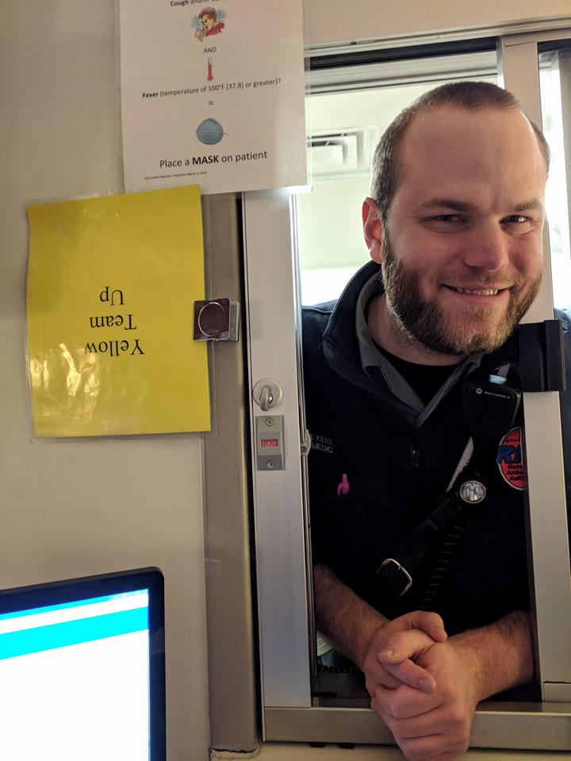

About Me
I am a career paramedic working for the city of Richmond, VA. I have a long term interest in computer hardware, and I am currently learning skills to become a web developer to play on these interests. I enjoy cooking, playing guitars, watching soccer (mcfc) and pretty much all things video games.
I am looking to use skills learned in web development to make a career in a position with regular challenges, and the ability to problem solve on a regular basis.
I was born at FE Warren AFB in Wyoming, and spent most of my youth moving regularly around the country. I have been in Richmond for the last 5 years, but before that I spent time in Northern VA, Maryland, Vermont, Colorado, and Ohio.